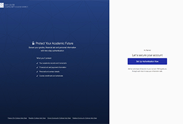
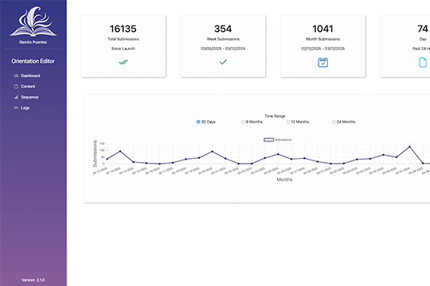
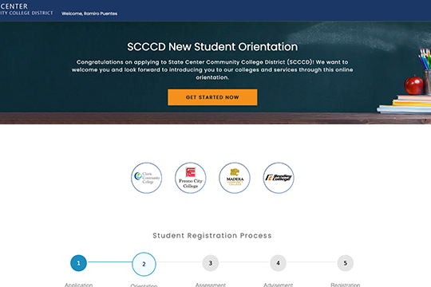
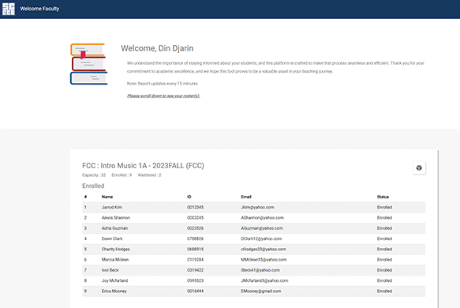
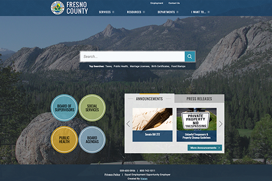

Identity & SecurityHigher Education
Student Multifactor Authentication
Designed and developed a student-facing application that supports voluntary MFA enrollment before enforcement becomes mandatory.
View case study →SOFTWARE ENGINEERING · SYSTEMS INTEGRATION · AI
I’m Ramiro Puentes, a software engineer with 10+ years of experience delivering full-stack applications, enterprise integrations, and user-centered tools for higher education and public-sector teams.
SELECTED WORK

Designed and developed a student-facing application that supports voluntary MFA enrollment before enforcement becomes mandatory.
View case study →
Built an internal dashboard that lets IT staff manage and publish orientation content without requiring code changes.
View case study →
Created an accessible, guided experience for students completing a required orientation workflow.
View case study →Explored how Gemini-assisted tooling can help users adapt web experiences to better meet accessibility needs.
View case study →
Delivered a focused application for instructional faculty to find course and student roster information efficiently.
View case study →
Supported a major public website modernization as a subject-matter expert and project lead through platform and design change.
View case study →ENGINEERING PROFILE
Full-stack .NET applications, C#, SQL, MVC, responsive interfaces, and production support.
APIs, identity, authentication, data workflows, third-party services, and enterprise systems.
Secure workflows, validation, MFA/identity patterns, fault-aware design, and maintainable operational tooling.
User research, WCAG-minded design, workflow simplification, responsive UI, and iterative testing.
TECHNICAL FOCUS
My core stack centers on .NET, C#, SQL Server, web technologies, APIs, identity, and production support. I choose tools based on reliability, maintainability, security, and the needs of the people using the system.
RECENT ACHIEVEMENTS
I've excelled in tackling complex projects, receiving recognition for innovative solutions, and successfully collaborating with diverse teams to reach significant milestones. Here are a few of the credentials behind that work.
NEXT STEP
The full portfolio includes enterprise applications, systems-integration work, accessibility and UX projects, public-sector modernization, and independent technical projects.